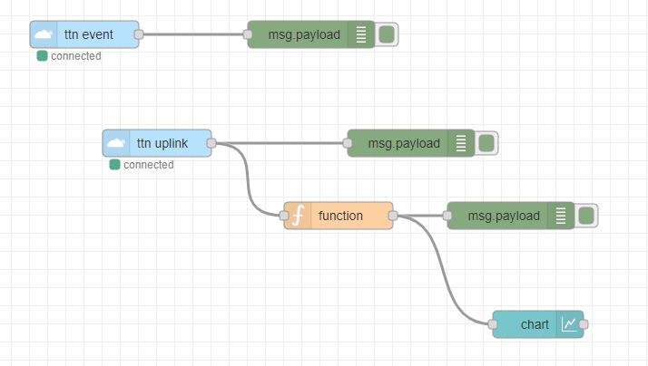

Descriptive part
The Smart Devices course is composed of five modules in which we study
the steps in order to design a smart gas sensor by starting with his physical development in a laboratory until the data
acquisition thanks to a microcontroller.
The first module concerns an introduction to sensors in which I discovered
the physical notions about sensors in general.
Furthermore, I also learnt how to build a datasheet for a sensor, particularly for a gas sensor.
The second module, is about optical sensors,
we learnt how to use it with precaution and the different types of lasers that we can found in the industry.
The third module is about CAD, manufacturing, integration of a nano-sensor. I started
by designing the sensor in the AIME: I deposited nano-particles on a silicon brick to create a sensor that can detect variations in a particular gas.
Then, I design the PCB for the sensor by using KiCad.
The fourth module is about analog eletronic labs. The goal is to allow us to
design our electronic circuit that we will connect to the gas sensor so that we can then translate the sensor’s
output into an interpretable analog signal.
Finally, the fifth module is about microcontrollers and open-source hardware. This module was focused
on a project for which I had to gather the different components (gas sensor, PCB, analog circuit) to create our device.
Furthermore, I added a LoRa communication module and a Arduino board to obtain a smart device for data acquisition.
In this page you will find all the information about the laboratory design of my smart sensor data process with microcontroller
and LoRa communication implementation.
I also highlight the knowledge and skills acquired during this entire course.
AIME internship
During my internship at AIME, located on the INSA Toulouse campus, for 3 days spread over 2 weeks, I was able to be initiated
to the realization of a gas sensor. The objective was to realize this sensor based on WO3 nanoparticles.
We can break down manufacturing and process evaluation into 4 main steps:
- nanoparticle synthesis: this step consisted in elaborating a chemical solution consisting of sodium tungsten (Na2WO4)
and hydrochloric acid (HCl). Several operations of stirring and rinsing the solution were necessary in order to obtain
the purest possible solution of nanoparticles. We used precision instruments such as millimetre pipettes.
- development of the microchip: for this step we use the photolithography process which consists in reproducing
the image of a mask on a substrate covered with a layer of photosensitive resin.
Thanks to a specific machine, we could apply the mask on our substrate.
This mask contained a heating resistance, a aluminium resistance for the measurement, and two interdigitated combs
where we will make the deposition of nanoparticles which became gas sensitive resistances.
- integration of the sensitive layer of nanoparticles on the chip: for this step we realized the di-electrophoresis operation.
During this treatment, two combs are selected for which an electric field is applied. Then we put a drop of our nanoparticle
solution on the chip for a minute. We rinse the chip then we can observe on the photo below the reaction obtained.
- electrical characterization of the sensor under controlled atmosphere: The voltage current characteristic (I(V)) for the sensitive layer,
the poly resistor, and the aluminium resistor of the sensor. Then, we applied several gas on our sensor to test the characteristic resistance
variations of different gases (ethanol, ammonia, and dry air (N2O2)). All these results were useful for the realization of the sensor datasheet.
Having already had to consult very often datasheets, I knew the vast majority of the headings to be included in this one.
The analysis of the data collected from the tests of our sensor made it possible to carry out characteristic curves relevant to insert the datasheet.
The final chip is given on the right.
Introduction to sensors
Throughout the course sessions, we have discussed about the different families of sensors (active, passive...), the physical principles of operation
of some sensors, the possible physical quantities to measure (light, temperature,...) but also metrological characteristics as for instance the sensitivity,
linearity, fidelity of a given sensor. During practice works, we studied different types of conditioners (bridge, amplifiers...)
associated with a sensor in order to convert a signal into a value that can be interpreted by a user (tension, current…) and to optimize their performance.
At the same time, we worked on the development of a datasheet for our gas sensor, which includes all the key elements that must be included on such a document.
I oversaw realizing the current - tension plot. Thanks to this plot, we can determine each time the 3 resistance values of our sensor.
Microcontrollers and Open-Source Hardware (MOSH)
In this module we have been sensitized to the multitude of possibilities that can bring an arduino to design
different assemblies allowing to control and link between them different electronic components such as LEDs,
push buttons, LCD screens...
Then I did a mini-project around open-source technologies. Indeed, the goal was to be able to send data from
our gas sensor to the TTN cloud (The Things Networks) using a communication module containing a LoRa RN2483
chip added to our Arduino to create a smart device. We used the Arduino software to code our application in the C++ language.
Electronic laboratories
The Analog electronics labs were useful to design the electronic circuit added to our gas sensor.
The output of our gas sensor is a resistance variation. In order to be able to obtain
a measurable and interpretable quantity by our Arduino, we need, for example, to be able to express a current
resulting from this variation of resistance when a voltage is imposed. Moreover, the current is too low
to be able to measure it effectively (of the order of nA), it is therefore necessary to design a conditioner circuit
that can adapt to the voltage range of our Arduino Uno ADC ([1V ; 5V]).
The fact of being able to design the electronic circuit ourselves on breadboard,
allowed me to put into practice my experience in electronic assemblies that I acquired during my 3 years
in the Automatic Electronics field. The simulation of the assembly could be done with LTSpice which
I already had the opportunity to use on previous projects. You can have more details on the short report
I made below.
Smart Sensor project
The objective of the UF Smart Devices project was to design and build a smart device based on the combination of our gas sensor
and an electronic card to communicate information over a low speed network to then store data to the Cloud.
As said previously, the gas sensor was created at AIME. For the electronic card, the design was made using KiCad.
For the LoRa communication, we used a RN2483 chip. The microcontroller used was an Arduino Uno. Finally, we decided to store
data values from our gas sensor in the The Things Network cloud (TTN).
All project source files are available on
Github.
Designing the shield circuit
During the directed works and autonomy sessions, we had to create our own shield for our gas sensor.
The objective in this part was to create a shield that is adapted for the Arduino Uno with passive and active electronic
components available in the laboratory rooms of INSA’s Physical Engineering Department.
Under KiCad, we can import a basic model of Arduino Uno. Then we can select the pins of the card we are going to use.
Unused pins can be changed to "not connected", which avoids having floating pins.
Subsequently, we created the LTC1050 operational amplifier which was not included in KiCad default libraries.
We needed to download the corresponding symbol and then add it to the KiCad library. We did the same for the RN2483 chip.
We also created a model of the gas sensor: a variable resistance (to simulate the heating resistance)
with a fixed value resistance. Afterwards, we were able to create our circuit after adding the necessary resistors
and capacitors for each filter.

In a second part, it was to design the associated PCB using PcbNew under KiCad.
We created the footprints the RN2483 CHIP and the gas sensor. For the sensor, we choose
the TO-5-10 (10 pins) to get closer to our real sensor (with 8 pins). The next step is to realize the board routing.
For this, many rules are to be respected (in particular avoiding to realize right angles) when placing routes.
Moreover, the challenge is to be able to place all the elements in an optimal and organized way in order to make the
best use of the surface of the PCB. It was also important to know how to use "vias" to connect two layers of the PCB
between them.
Not all pins of the sensor are used. One side (2 pins) is chosen for the gas input and then pins for the heating
resistance to connect it to the 5V or ground. 3D visualization is also important when pairing the gas sensor with
its housing. The final PCB is given on the right.
Creating a software application to send sensor data
The next step was to design the application in order to send data to the TTN Cloud when a gas variation detected
is too large. To do this, simply consult the output voltage of the gas sensor device. An optimal way to achieve
this goal while reducing the energy consumed by the Arduino board is to proceed by interruption. We decided that
with each value acquisition, we put the CPU and therefore the Arduino in standby mode. To do this, we attach a pin
to the board. The corresponding code is given on the right.
Regarding the recovered values, we knew that the ADC of the Arduino is on 10 bits, which gives us 1024 possible values.
We selected an analog pin (A0) to retrieve the output voltage value of the sensor. Then in the code we do the conversion
in order to send a value between 0V and 5V.
LoRa Communication and TTN
The LoRa chip was hand-welded. We then selected the pins that interested us to design the communication module
with the Arduino. After implementing the Arduino application, the data transmitted via the LoRa low-speed network
to the TTN cloud could be recovered. The challenge here was to be able to extract the payload from the received
frame in order to be able to decrypt it and translate it into an interpretable data (voltage variation).
To do this, a JavaScript script had to be created to rescind the decoding operation directly on the TTN platform.
The decoder is given on the right as well as a decoding test for a payload.
Vizualise the data with Node-Red
Node Red is a intuitive and useful tool based on Node.js to create graphical elements (dashboard...) in a web environment.
So we used it to be able to efficiently display the data loaded on the Cloud.
More precisely, it was used to setup an uplink/downlink communication between our LoRa chip and the TTN Cloud.
You can found below the associated flow designed with Node-Red. A chart displayed all voltage variation that our LoRa chip
sent to the Cloud.

Analytical part
This entire module was very challenging and interesting. Indeed, I carried out a project from the realization
of the gas sensor in the laboratory, to the design of the conditioner circuit until the acquisition, control
and storage of data in the Cloud. This allowed us to be versatile during each phase of development of the project,
which seems to me essential for a future engineer.
Also, I was able to take advantage of my skills in electronic circuit design and microcontroller programming.
Regarding the section "introduction to sensors", I was able to review the physical notions behind
the realization and operation of a sensor, which I was able to acquire during my first and second year.
This was especially useful to understand the steps in the process of creating our gas sensor at AIME.
Then, concerning the datasheet, the group work was very useful for the construction of this one, in roder to have
different points of view during the datasheet draft.
Then, in the "MOSH" section, I was really involved in the design of the conditioner under LTSpice but also under KiCad
(for the final PCB of the shield). The design of the PCB under KiCad was a real challenge for me, having carried out
only circuit simulations under LTSpice. This software is very complete and not easy to take in hand at the beginning,
I researched a lot to succeed in designing our circuit properly. In the end, the result of the PCB was convincing and
has fulfilled the objectives.In terms of low-level software development, I was able to discover the world of Arduino,
already having experience in microcontroller through the NXP Cup and last year’s projects.
The development of the application for data acquisition and storage in the cloud did not pose great difficulties
and was promising.